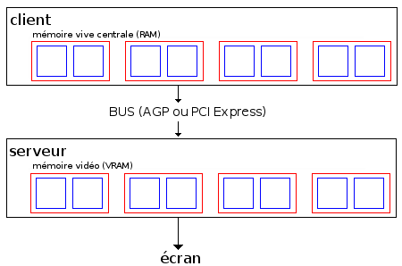

Vos rendus 3D avec OpenGL sont lents alors que vous possédez le dernier cri en matière de carte graphique ? Ou bien votre vieille machine vous fait des caprices avec vos codes OpenGL trop gourmands pour elle ? Ou encore vous souhaiteriez découvrir une nouvelle façon d'afficher des polygones avec OpenGL ?
Si c'est le cas, bienvenue dans ce tutoriel, il est fait pour vous ! :) Ici, je vais tenter de vous faire connaître les différentes façons de procéder à un rendu avec OpenGL, leurs avantages ainsi que leurs inconvénients.
Bienvenue dans le premier chapitre de ce tutoriel. :)
Ici, nous allons découvrir une méthode de rendu particulière, destinée à améliorer les performances et la rapidité d'affichage de vos scènes 3D avec OpenGL. Nous étudierons ensuite les avantages que cette méthode présente, et les limites qu'elle implique.
Une display list est, comme son nom l'indique, une liste d'affichage. :p En pratique, vous pouvez vous représenter cela comme une zone de stockage d'informations.
Une display list a pour but d'enregistrer vos appels au pilote de votre carte graphique dans une zone mémoire réservée par OpenGL, à laquelle vous pouvez faire appel quand vous le souhaitez.
Cool, et ça sert à quoi ?
À afficher des polygones, tiens ! Mais pas n'importe comment. ;) En effet, une display list s'exécute beaucoup plus rapidement qu'une suite d'appels à glVertex*().
Enregistrer, pilote, exécuter, glVertex... je n'y comprends rien. o_O
Un petit dessin s'impose :
Dans une display list on peut stocker des informations quelconques (il y a des restrictions toutefois, nous verrons cela plus bas).
Qui d'entre vous n'a jamais rêvé de pouvoir afficher son cube texturé en un appel de fonction, sans construire lui-même la fonction ? Personne. :p Prenons un exemple simple, un carré + un triangle, simplement colorés :
(Oh la jolie maison... :-° ) Je voudrais que cette maison se dessine à chaque frame : rien de plus simple me direz-vous, on place cela dans une fonction dessiner_maison() et hop, le tour est joué. Cependant, ce code ne sera pas très optimisé pour une simple raison : deux appels à glBegin() se font ressentir. glBegin() a en quelque sorte pour effet « d'ouvrir » le pilote graphique et de le tenir prêt pour un rendu. Les appels au pilote graphique sont lourds et coûtent cher en ressources ; une des premières optimisations à faire dans tout programme 3D utilisant le hardware (carte graphique) est de limiter ceux-ci.
Certains me diront qu'avec une utilisation judicieuse de GL_TRIANGLES (et même GL_TRIANGLE_STRIP/FAN ), on peut n'effectuer qu'un seul appel à glBegin() dans ce dessin, et ils auront raison. Cette maison est uniquement là à titre d'exemple. En effet, lorsque l'on veut rendre plusieurs sortes de primitives, on doit obligatoirement faire plusieurs appels au pilote, quelle que soit la méthode utilisée. Mais généralement les graphistes triangularisent leurs modèles, d'une part parce que les triangles sont la seule primitive supportée nativement par les cartes graphiques, et ensuite pour n'effectuer qu'un seul appel au pilote lors du rendu, ces deux points font gagner déjà beaucoup en matière de performances.
Revenons-en à nos display lists. Supposons que je sois un flemmard (et pas la peine de le supposer d'ailleurs, j'en suis un :-° ) et que je n'aie pas envie de me creuser la cervelle pour optimiser mon code, que fais-je ? Une display list ! Au lieu de mettre mes glVertex*() dans une fonction, je vais les mettre dans une display list. (Oui, oui, vous avez bien entendu lu.) Complétons notre schéma, vu plus haut :
Hé oui, ces fameuses informations que notre display list peut stocker, ce ne sont rien d'autre que des appels de fonctions. :)
Hein ?! Depuis quand on peut "stocker" des fonctions en C ??
Demandez à OpenGL. :p En réalité, OpenGL n'enregiste pas les fonctions elles-mêmes, mais plutôt leur effet. Attention cependant, OpenGL n'accepte pas toutes ses fonctions. Vous trouverez dans la page de man de glNewList() la liste des fonctions non acceptées.
Pour en revenir au fonctionnement du stockage des fonctions dans une display list, je vais tenter une brève explication. Tout d'abord, il faut dire à OpenGL que l'on souhaite rentrer en mode "display list". À partir de là, les appels de fonctions sont enregistrés dans un cache de commandes. Pour afficher le contenu de la liste, il suffit ensuite de dire à OpenGL d'exécuter les commandes enregistrées dans ce cache. Ce cache se situe en mémoire vive, et de préférence dans celle de la carte graphique.
Puisqu'à présent les présentations sont faites, et que vous savez ce que l'on peut faire avec une display list, je vous propose de passer aux exemples de code. :)
Une display list OpenGL n'est rien d'autre qu'un objet OpenGL. Les objets OpenGL sont des GLuint (entiers non signés). Par exemple, une texture est un objet OpenGL.
GLuint obj_id; /* identifiant de notre objet */
Les objets OpenGL ont des fonctions de manipulation de base, qui ont des noms très similaires.
void glGen*(GLsizei nb, GLuint *objs) : crée nb identifiants dans objs ;
GLboolean glIs*(GLuint id) : renvoie GL_TRUE si l'identifiant est un identifiant d'objet valide ;
void glDelete*(GLsizei nb, GLuint *objs) : supprime nb objets dans objs.
Exemple simple :
GLuint texture; /* voici notre identifiant */
/* cree une texture et place son identifiant dans la variable texture */
glGenTextures(1, &texture);
/* ce if a toutes les chances de reussir, si ce n'est pas le cas,
il y a probablement une saturation memoire */
if(glIsTexture(texture))
printf("identifiant valide, texture creee avec succes\n");
/* utilisation ... */
/* on supprime notre objet */
glDeleteTextures(1, &texture);
Il en va de même pour tous les types d'objets OpenGL, il suffit de remplacer Textures par le nom du type de l'objet que l'on souhaite manipuler. Malheureusement, il existe des exceptions, et les display list en sont justement une. :'(
Allons, allons, les différences ne sont pas si grandes, et ne devraient pas trop vous poser de problèmes. ;)
Voici le prototype de la fonction permettant de créer un identifiant de display list :
GLuint glGenLists(GLsizei range);
range : représente le nombre d'identifiants contigus à créer. La valeur retournée est le premier index de cette suite d'identifiants (appelés plus communément index dans le cas des display lists).
Si nous voulons créer une liste, nous allons faire comme cela :
GLuint list;
list = glGenLists(1);
/* utilisation ... */
La suppression d'une liste s'effectue avec la fonction suivante :
void glDeleteLists(GLuint list, GLsizei range);
Son fonctionnement diffère des fonctions habituelles pour la manipulation d'objets OpenGL, mais si vous avez compris la création d'une liste, vous ne devriez pas avoir de problème avec sa suppression. La suppression d'une liste la vide de son contenu et rend inutilisé l'index list, précédemment réservé par glGenLists() .
Maintenant que nous savons créer une display list, il est temps de savoir s'en servir. :)
Nous l'avons vu ci-dessus sur notre schéma, une display list est une zone de stockage de fonctions. Le stockage de ces fonctions se fait de manière plutôt sympathique et intuitive. :) Il vous suffit... d'appeler ces fonctions. Cependant, avant de les appeler, il est nécessaire de prévenir OpenGL que ces appels devront non pas êtres exécutés mais stockés dans une liste. Il existe deux modes de stockage :
GL_COMPILE : stockage brut dans la display list ;
GL_COMPILE_AND_EXECUTE : stocke et exécute les fonctions fournies.
Ces deux constantes s'utilisent avec la fonction glNewList() , dont voici le prototype :
void glNewList(GLuint list, GLenum mode);
list : représente l'index de votre liste ;
mode : doit être positionné à l'une des constantes énumérées ci-dessus.
Cet appel de fonction peut se traduire ainsi :
à partir de maintenant, tous mes appels de fonctions OpenGL seront stockés dans list.
Lorsque vous avez fini de construire votre liste, il existe une fonction très simple, pour revenir en mode normal :
void glEndList(void);
Je pense que cette fonction se passe de commentaire. :-° En revanche, le fonctionnement global a bien besoin d'un petit résumé.
Créez un identifiant de liste grâce à glGenLists() .
Marquez le début du remplissage de votre liste avec glNewList() .
Appelez les fonctions OpenGL que vous souhaitez voir stockées dans votre liste (glVertex*() , glColor*() , etc.).
Marquez la fin du remplissage de votre liste.
Utilisez votre liste à votre guise (on verra ça plus bas).
Supprimez votre liste lorsque vous êtes sûrs que vous ne vous en servirez plus : pour ce faire, appellez glDeleteLists() .
Toutes ces indications barbares peuvent se schématiser (j'en profite pour exalter mes talents de graphiste 2D :-° ) :
Voici un exemple de code complet :
/* voici notre identifiant */
GLuint list;
/* on cree un objet et on recupere son identifiant */
list = glGenLists(1);
if(list == 0)
{
fprintf(stderr, "erreur lors de la creation de la liste\n");
return (-1); /* ou autre fonction adequate selon la situation */
}
/* remplissage de notre liste */
glNewList(list, GL_COMPILE); /* start */
glBegin(GL_TRIANGLES);
glColor3f(1.0, 1.0, 1.0); glVertex2f(0.0, 0.9);
glColor3f(1.0, 0.0, 0.0); glVertex2f(-0.5, 0.3);
glColor3f(0.0, 1.0, 0.0); glVertex2f(0.5, 0.3);
glEnd();
glBegin(GL_QUADS);
glColor3f(1.0, 0.0, 0.0); glVertex2f(-0.5, -0.8);
glColor3f(0.0, 1.0, 0.0); glVertex2f(0.5, -0.8);
glColor3f(0.0, 1.0, 0.0); glVertex2f(0.5, 0.3);
glColor3f(1.0, 0.0, 0.0); glVertex2f(-0.5, 0.3);
glEnd();
glEndList(); /* stop */
/* utilisation ... */
...
/* quand notre liste n'est plus utilisee, on peut la detruire */
glDeleteLists(list, 1);
Ce code n'a pour effet que de stocker les informations de dessin de notre jolie maison dans une display list nommée list. Ensuite, il détruit l'objet.
Construction structurée
Il est possible d'utiliser des fonctions et des instructions standards dans une liste d'affichage. Et tant mieux, sinon les listes d'affichage n'auraient pas grand intérêt. Par exemple, ce code est tout à fait correct :
glNewList(list, GL_COMPILE);
/* positionnement en bas a gauche de l'ecran */
glTranslatef(-0.5, -0.5, 0.0);
/* changement d'echelle */
glScalef(0.3, 0.3, 0.3);
for(i=0; i<3; i++)
{
glTranslatef(1.0, 1.0, 0.0);
dessiner_maison();
}
glEndList();
Tout est permis dans une liste d'affichage, seules les fonctions OpenGL avec leurs paramètres seront retenues au sein de notre display list.
Intéressons-nous à présent au rendu de notre liste à l'écran. :)
Ouf, nous y sommes enfin ! Je pense que le plus dur est fait : à partir de là, ça va couler comme de l'eau de source. :p
Rendu simple
Alors - voyons voir -, nous savons à peu près tout sur les display list, mais on ne sait toujours pas comment faire un rendu. :'( Rassurez-vous, il n'y a pas 36 façons de procéder ; en réalité, cela se tient en un seul appel de fonction :
void glCallList(GLuint list);
Quoi ?! Toute une sous-partie juste pour nous dévoiler cette fonction (dont j'ai découvert le fonctionnement tout seul comme un grand) ?
Meuh non. :p
Au cas où certains d'entre vous n'auraient tout de même pas cerné le fonctionnement, je vais mettre un bout de code. Remplacez les '...' du code vu dans la précédente partie, par ceci :
glCallList(list);
... et vous verrez une jolie maison se dessiner. :p Voilà, rien de plus compliqué (pour l'instant). Cette fonction peut donc s'appeler n'importe quand, à l'instar de notre fonction dessiner_maison(), comme nous allons le voir.
Rendus imbriqués
Maintenant que vous maîtrisez la création et l'affichage d'une liste, le code ci-dessous devrait vous paraître relativement simple :
Hé oui, on peut stocker des listes dans des listes. :)
Cela peut avoir un avantage non négligeable. Imaginez que vous vouliez dessiner plusieurs voitures, elles ont toutes les mêmes roues, mais différentes carrosseries. Il suffit de stocker l'affichage d'une roue dans une display list, l'affichage des différentes carrosseries dans d'autres, puis, pour afficher les voitures tout entières, vous n'aurez qu'à construire une liste par voiture qui contiendra l'imbrication de quatre appels à la liste d'une roue, avec modifications matricielles entre ceux-ci afin de positionner les roues correctement par rapport à votre carrosserie, que vous dessinerez ensuite (ou avant, aucune importance).
Comme vous le voyez, les display lists acceptent également le stockage de fonctions de manipulation des matrices OpenGL. Attention toutefois, je n'ai fait aucune sauvegarde de la matrice (glPushMatrix() / glPopMatrix() ) à l'intérieur de la display list ; pensez donc à le faire, soit dans la display list, soit dans le code de rendu, comme ceci :
glPushMatrix();
glCallList(list2);
glPopMatrix();
Et le résultat en image, de nos quatre maisons ainsi dessinées :
Les display lists constituent la méthode de rendu la plus rapide avec OpenGL. En effet, les informations de rendu sont stockées de façon intelligente en un code binaire lisible très rapidement par OpenGL, qui peut ainsi l'envoyer de manière efficace et quasi-instantanée au pilote graphique. Cependant, elles ont quelques défauts, et sont très peu, voir pas du tout utilisées dans les applications 3D récentes.
Pourquoi, me direz-vous ?
Premièrement, il est impossible de mettre à jour le contenu d'une display list, une display list créée n'est pas modifiable. Cela pose problème lors d'un rendu animé, comme pour un personnage par exemple. Il est possible d'utiliser les display lists avec un rendu animé, la seule solution est de supprimer (glDeleteLists() ) puis de recréer la liste avec les nouvelles données, mais cette opération est très lourde et coûte beaucoup en ressources, elle n'est donc pas utilisée.
Les display lists sont en revanche très adaptées pour n'importe quel rendu statique (terrain, bâtiment, ...) : ne vous en privez donc surtout pas si vous avez une scène comportant des objets statiques. ;) Gardez également à l'esprit que les modifications matricielles appelées en dehors ou à l'intérieur d'un glCallList() sont appliquées sur tout ce que vous dessinerez ensuite, y compris les listes d'affichage ; donc si votre animation se résume à un simple déplacement, les display lists sont également appropriées.
Malgré tout, aucun jeu récent ne s'en sert pour afficher un terrain : avec la constante évolution des machines, les moteurs physiques permettent de plus en plus d'interactions avec le monde environnant, et cela implique une modification de la géométrie, ce que ne supportent pas les display lists. Les display lists n'existent pas sous DirectX, ce qui explique aussi leur absence fréquente (voire permanente) puisque DirectX est la bibliothèque multimédia la plus utilisée pour les jeux.
Dernière chose, de par leur géométrie statique, aucune optimisation de scène (frustum culling, octrees, ...) n'est très possible sur un mesh (traduisez par maillage) stocké dans une display list.
Voilà, le premier chapitre est terminé.
Pour clore ce chapitre, je dirais que si vous avez l'occasion de vous servir des display lists, ne vous en privez pas, j'ai eu les meilleurs FPS (Frames Per Second) avec ces dernières. Elles sont également très utilisées pour réaliser des exemples de code, car elles permettent d'alléger facilement et rapidement un code d'exemple OpenGL, ce qui a pour effet de faciliter sa compréhension (pour un tuto par exemple ;) ).
Pour plus d'informations, je vous suggère d'aller consulter la FAQ Display Lists du site d'OpenGL.
Je vous invite à présent à venir voir le second chapitre de ce tutoriel, qui montre une façon moins optimisée et plus difficile à appréhender, mais beaucoup plus flexible, de procéder à un rendu de polygones.
Nous allons tout d'abord voir ce que représentent ces "vertex arrays" si intrigants, puis je vous expliquerai leur fonctionnement et vous montrerai des exemples d'utilisation au sein d'un programme OpenGL. Ce chapitre est essentiel pour la compréhension du suivant, lisez-le donc attentivement. ;)
Les Vertex Arrays sont loin de s'apparenter aux display lists que nous avons vus dans le chapitre précédent.
En effet, comme leur nom l'indique, il s'agit de tableaux de sommets.
Qu'est-ce qu'un "sommet" ?
Un sommet est un ensemble de données. Voici de quoi est composé un sommet :
une position (glVertex*() ) ;
une normale (glNormal*() ) ;
une couleur (glColor*() ) ;
une couleur secondaire (glSecondaryColor*() ) ;
un indicateur de contour (glEdgeFlag*() ) ;
des coordonnées pour l'unité de texture 0 (glTexCoord*() ) ;
coordonnées de texture 1 (glTexCoord*() ) ;
coordonnées de texture 2 (glTexCoord*() ) ;
coordonnées de texture 3 (glTexCoord*() ) ;
coordonnées de texture 4 (<italique></italique> ) ;
coordonnées de texture 5 (glTexCoord*() ) ;
coordonnées de texture 6 (glTexCoord*() ) ;
coordonnées de texture 7 (glTexCoord*() ) ;
coordonnées de texture 8 (glTexCoord*() ), ... ;
attribut de sommet 0 (glVertexAttrib*() ) ;
attribut de sommet 1, ...
Sommet se traduit par vertex en anglais. Un vertex ne représente pas, contrairement à ce que l'on pourrait croire, des coordonnées dans l'espace, le nom donné à la fonction glVertex*() induit en erreur. La fonction glVertex*() a pour effet de valider la création d'un sommet, dont les attributs seront les valeurs précédemment envoyées aux fonctions glTexCoord*() et compagnie, avec les coordonnées spatiales du sommet. Étant donné que les coordonnées spatiales sont les informations minimales nécessaires à la création d'un sommet, le nom donné à la fonction glVertex*() est compréhensible (mais nécessite une explication ;) ).
Les attributs de sommet (vus à la fin de la liste ci-dessus : glVertexAttrib*() ) se prolongent jusqu'à une limite, dépendant de votre implémentation d'OpenGL. Comme toutes les limites, il est possible de la connaître. Envoyez le paramètre GL_MAX_VERTEX_ATTRIBS à glGetIntegerv() pour connaître le nombre maximum d'attributs qu'accepte votre carte graphique pour un sommet.
int max_attribs;
glGetIntegerv(GL_MAX_VERTEX_ATTRIBS, &max_attribs);
Les coordonnées de texture ne se limitent pas toujours à 8, cela dépend du nombre maximum d'unités de textures supporté par votre carte graphique. Envoyez GL_MAX_TEXTURES_UNITS_ARB à glGetIntegerv() pour connaître cette limite.
Bien, maintenant que les présentations sont faites, passons au vif du sujet. Allez-y, posez-moi la question cruciale. :p
Qu'est-ce qu'un vertex array ?
Un tableau. :)
float vertices[NB];
L'idée est en fait de stocker nos données dans des tableaux, puis de donner ceux-ci à manger à OpenGL pour qu'il se débrouille avec. Il faudra cependant (et logiquement) donner des instructions à OpenGL sur la nature de nos données afin qu'il puisse les utiliser convenablement et comme on l'entend.
Avec glVertex*() , glColor*() , glTexCoord*() et compagnie, on envoie les données une par une, et chaque envoi nécessite un appel de fonction ; cette méthode est extrêmement lourde et peu flexible. L'envoi de données par tableaux est beaucoup plus efficace comme nous allons le voir. ;)
Comme je l'ai dit, l'envoi des données se fait par le biais de tableaux. Cela permet de maintenir nos données à jour facilement, puisque dorénavant il suffira de modifier nos tableaux et les modifications lors du rendu seront immédiatement appliquées.
Cette fois-ci, aucun objet OpenGL n'est à manipuler comme avec les display lists, tout se passe dans une relation client / serveur très étroite.
La relation client / serveur
Le client
C'est vous. :p Vos instructions représentent généralement celles effectuées côté client, c'est-à-dire au niveau du CPU et de la mémoire centrale (RAM). Vous êtes donc le client... mais le client de qui ? o_O
Le serveur
Dans un programme OpenGL, le serveur représente la carte graphique. En effet, vous êtes son client : autrement dit, vous lui donnez des instructions pour afficher des choses à l'écran. OpenGL n'est rien d'autre qu'une passerelle entre vous et le driver graphique. C'est par le biais d'OpenGL que vous allez interagir avec votre carte graphique.
Les vertex arrays, des données côté client
Les données sont de votre côté puisque vous définissez vos tableaux comme ceci :
float *data = malloc(sizeof *data * NB);
Nous allons commencer par gérer les données côté client, d'une part parce que c'est plus simple, et d'autre part parce que cela constitue une étape indispensable pour passer au chapitre suivant.
La construction d'un vertex array prêt à être dessiner peut se décomposer en 3 étapes :
la création de nos données. Cette étape n'a lieu qu'une seule fois pour tous les rendus. Les données sont généralement récupérées à partir d'un fichier ;
l'activation des tableaux de sommets. On indique à OpenGL qu'on souhaite lui envoyer des données qui sont sous forme d'un tableau côté client ;
la spécification explicite de l'emplacement de nos données via leur(s) adresse(s) mémoire.
Création / récupération de données
Nous allons commencer simplement. Si vous arrivez à bien comprendre le fonctionnement des vertex arrays, il sera facile pour vous ensuite de créer votre propre chargeur de fichiers 3D. Il existe de nombreux formats, les plus simples étant les fichiers textes, tels .obj ou .ase, les plus complexes étant souvent en binaire et comportant pleins d'informations (lumières, caméras, ...) tels .3ds, pour 3D Studio Max, ou encore .blend pour Blender.
En attendant, nos données seront statiques et déclarées sous forme d'un simple tableau au sein même de notre programme. Voici le tableau qui définira la position de nos sommets (glVertex*() ) :
Si vous commencez à y voir déjà un peu plus clair à la lecture de ce code, c'est bon signe, sinon, patientez, il faut attendre de tout connaître pour bien comprendre le principe des vertex arrays, qui n'est pas si simple. ;)
Activation des tableaux côté client
Seconde étape. Ici, rien de bien méchant, on va juste dire à OpenGL que l'on souhaite pouvoir lui envoyer des données via des tableaux. On va commencer par activer simplement les tableaux des positions de sommet :
glEnableClientState(GL_VERTEX_ARRAY);
Ici on peut retrouver le principe de fonctionnement d'OpenGL avec le nom de la fonction appelée : glEnable Client State() . Son paramètre désigne le type des données que l'on souhaite activer, GL_VERTEX_ARRAY désigne les positions de sommet.
Voici la liste des types de tableaux qui peuvent être activés via glEnableClientState() :
GL_VERTEX_ARRAY : positions de sommet (glVertex*() ) ;
GL_NORMAL_ARRAY : normales de sommet (glNormal*() ) ;
GL_TEXTURE_COORD_ARRAY : coordonnées de texture des sommets (glTexCoord*() ) ;
GL_COLOR_ARRAY : couleurs de sommet (glColor*() ) ;
GL_INDEX_ARRAY : couleurs indexées (quasi-obsolète, les couleurs en mode indexées ne sont plus utilisées en 3D moderne, la puissance des cartes graphique nous permet d'oublier ces subtilités) ;
GL_EDGE_FLAG_ARRAY : indicateur de contour (glEdgeFlag*() ).
Une fois que vous aurez activé les types de tableaux que vous souhaitez envoyer à OpenGL pour le rendu, vous pouvez passer à l'étape suivante. :)
Spécification des données
Nous voici arrivés à l'étape la plus rigolote mais aussi, et surtout, la moins facile. Résumons, histoire d'y voir un peu plus clair. Nous avons nos données, si vous avez pris la peine de les examiner, vous aurez constaté qu'elles constituent un simple carré. Nous avons également activé un état OpenGL pour dire qu'on souhaite lui envoyer des données qui se trouvent côté client.
Bien, je crois qu'un code complet s'impose :
#include <stdio.h>
#include <SDL/SDL.h>
#include <GL/gl.h>
/* dimensions de la fenetre */
#define W 640
#define H 480
/* initialise opengl */
void init_gl(void);
int main(int argc, char **argv)
{
int loop = 1; /* booleen du 'main loop' */
SDL_Event ev; /* structure d'evenement(s) SDL */
#define N_VERTS 4
#define V_SIZE 2
/* nos donnees */
float vertices[N_VERTS*V_SIZE] =
{
-0.8, -0.8, /* sommet 0 */
0.8, -0.8, /* sommet 1 */
0.8, 0.8, /* sommet 2 */
-0.8, 0.8 /* sommet 3 */
};
/* initialisation de la SDL en mode OpenGL */
SDL_Init(SDL_INIT_VIDEO);
SDL_SetVideoMode(W, H, 32, SDL_OPENGL);
/* nom de la fenetre */
SDL_WM_SetCaption("Vertex Arrays GL", NULL);
/* initialisation d'opengl */
init_gl();
/* boucle d'affichage principale */
while(loop)
{
/* recuperation d'un evenement */
SDL_WaitEvent(&ev);
/* analyse */
switch(ev.type)
{
case SDL_QUIT:
loop = 0;
break;
default:;
}
glClear(GL_COLOR_BUFFER_BIT);
/* activation des tableaux de donnees */
glEnableClientState(GL_VERTEX_ARRAY);
/* dessin ... a venir */
/* on flip les tampons */
glFlush();
SDL_GL_SwapBuffers();
}
return 0;
}
void init_gl(void)
{
glMatrixMode(GL_PROJECTION);
glLoadIdentity();
glMatrixMode(GL_MODELVIEW);
glLoadIdentity();
}
Vous pouvez compiler et exécuter ce code, vous verrez c'est passionnant : il ne se passe rien. :p
Bon, fini de rire ! :diable: Passons aux choses sérieuses.
Nous voulons donc envoyer nos données au serveur. Pour cela, nous avons plusieurs fonctions, chacune destinée à un type de données en particulier. Voici un prototype de base (fonction utilisée pour envoyer la position des sommets) :
size : représente le nombre de variables dans un groupe de données. Dans notre cas, nos positions de sommets sont en 2D, elles comprennent donc 2 variables. J'ai défini la macro V_SIZE à cette valeur comme vous avez pu le voir.
type : ça, c'est le type de nos variables. Dans notre cas, il s'agit de GL_FLOAT .
stride : paramètre qui, à première vue, ne peut servir qu'à déstabiliser le néophyte. :-° Cette valeur représente le décalage en bytes entre deux groupes de données. Si nos données se suivent dans notre tableau, nous placerons cette valeur à 0.
data : c'est notre tableau. :)
Voici les prototypes des autres fonctions, les paramètres sont similaires, et parfois même il y en a moins :
Vous l'aurez peut-être remarqué, chaque fonction correspond à une des constantes énumérées plus haut (GL_VERTEX_ARRAY , etc.). Ci-dessous, les spécialisations de chaque fonction. En effet, certaines sont capricieuses sur certains paramètres :
Dans notre cas, nous aurons juste besoin de glVertexPointer( , puisque nous avons décidé de n'envoyer que les positions des sommets. Nous allons donc rajouter ceci dans notre code :
glVertexPointer(V_SIZE, GL_FLOAT, 0, vertices);
Et on ne spécifie pas la taille que fait le tableau vertices ? À savoir, N_VERTS ?
Non. ^^ La raison est simple et évidente, et vous allez voir pourquoi lors de la prochaine sous-partie concernant le rendu.
Vous l'aurez sans doute remarqué, il n'existe qu'une seule fonction pour envoyer des coordonnées de texture (glTexCoordPointer() ). Pour le multi-texturing, nous allons utiliser glClientActiveTexture() qui définit l'unité de texturage qui sera affectée par le prochain appel à glTexCoordPointer() :
void glClientActiveTexture(GLenum unit);
unit : constante symbolique représentant l'unité de texturage à activer.
Voici un exemple :
glClientActiveTexture(GL_TEXTURE0);
glTexCoordPointer( ... ); /* envoie les coordonnees pour l'unite de texture 0 */
glClientActiveTexture(GL_TEXTURE0 + 4);
glTexCoordPointer( ... ); /* envoie les coordonnees pour l'unite de texture 4 */
Deux choses sont à retenir :
par défaut, l'unité de texturage active est 0, le premier appel dans mon exemple de code est donc théoriquement inutile, à moins qu'il y ait déjà eu un précédent appel à glClientActiveTexture() ;
GL_TEXTURE0 représente l'unité de texture 0, GL_TEXTURE1 l'unité 1, etc. jusqu'au nombre maximal d'unités de textures que votre matériel supporte (nous l'avons vu plus haut). Cependant, OpenGL a conçu ses constantes de façon à ce que vous puissiez procéder comme dans mon exemple, ce qui est un gain de temps et de lignes de code.
Bien, je crois que nous avons passé en revue les 3 étapes de la création d'un vertex array. :) Intéressons-nous maintenant de plus près à ces fonctions gl*Pointer() , car leur fonctionnement n'est pas si simple et nécessite quelques explications.
Des données structurées
Il est important de comprendre avec exactitude l'effet des paramètres envoyés à gl*Pointer() , car ils constituent la définition même de la structure de nos données, je vous ai gratifiés pour cela de quelques schémas dont j'ai le secret de la qualité graphique. :-°
En rouge: c'est un sommet.
En bleu : c'est une composante du sommet, soit une variable.
Ceci est un tableau de données de type quelconque. Nous avons 2 variables par sommet. Ce tableau peut être de n'importe quel type (float , short , int , ...). Pour l'envoi d'un tel tableau, nous allons donc appeler une fonction gl*Pointer() comme ceci :
glVertexPointer(2, /* type inconnu */, 0, pointer);
Ici, nous avons dit à OpenGL qu'il s'agissait d'un tableau représentant les positions des sommets (bicoz le nom de la fonction est gl Vertex Pointer() ). Soit, définissons notre tableau ainsi :
float pos[4 * 2] =
{
/* ... */
};
Là, j'ai décidé que le type sera float , nous allons donc mettre GL_FLOAT pour le paramètre type de la fonction glVertexPointer() :
glVertexPointer(2, GL_FLOAT, 0, pos);
À présent, nous voudrions un rendu coloré, nous allons donc devoir rajouter un tableau qui contiendra les données de couleur de nos sommets. Seulement celui-ci aura une taille de 3, pour nos trois composantes R, G et B :
Je l'implémente de la manière suivante dans mon code :
Nous avons à présent des sommets qui sont composés :
d'une position (glVertex*() ) ;
d'une couleur (glColor*() ).
OpenGL prend les sommets dans l'ordre dans lequel on les lui envoie : autrement dit, les 3 premières valeurs du tableau colors seront associées aux 2 premières valeurs du tableau pos . Il est primordial que vous reteniez cela. Encore une fois, un petit schéma ne sera pas de refus :
En vert : un sommet composé de ses types de données (nous en avons spécifié deux).
Comme vous le voyez, nos sommets sont indexés comme dans un tableau (ils partent de 0). Si vous avez l'habitude de manipuler des tableaux, cela ne devrait pas vous poser de problèmes.
Ah, on commence à avoir un rangement de données structuré. :)
Bien, il nous reste encore un paramètre des fonctions gl*Pointer() à étudier, stride .
Voyons voir : j'ai finalement décidé que notre modèle ne serait composé que de deux sommets. Mais, on voudrait que ces sommets soient les vertices 0 et 2 qui sont actuellement dans nos tableaux.
Simple, tu modifies les tableaux pos et colors !
Non ! Supposez que la géométrie soit livrée par un fichier, la modification manuelle est impossible. On va donc se servir du paramètre stride . Ce dernier représente le décalage en bytes de chaque sommet consécutif, en partant du début du sommet, jusqu'au début du suivant. La marge par défaut, qui est la taille d'un vertex, soit size * sizeof (TYPE ), est ignorée si stride est différent de 0. Si stride est égal à la taille d'un sommet (size * sizeof (TYPE )), son utilisation n'a aucun effet. Voici pour l'explication littéraire, mais ne vous inquiétez pas, je vous ai à nouveau mijoté de petits schémas. :p
Donc reprenons, stride représente le nombre de bytes qui sépare deux sommets ; si on donne à manger à notre glVertexPointer() ceci :
c'est-à-dire rien, comme je l'avais annoncé si on donne la taille d'un sommet.
En vert : c'est ce que va lire OpenGL en le considérant comme les données (de position en l'occurrence) d'un sommet.
Maintenant, pour obtenir le résultat que nous voulions, qui est de sauter 2 sommets pour se retrouver avec les sommets 0 et 2 consécutifs, nous allons positionner stride à 2*(size * sizeof (TYPE )) comme cela :
J'espère que c'est compréhensible. ;) Vous comprenez maintenant pourquoi il est important de maîtriser les pointeurs et les tableaux.
Exercice
Quoi ?! Déjà !? o_O
Ouais, allez au boulot. :p
Énoncé
J'aimerais que vous me construisiez un seul et unique tableau de données qui contiendra les positions des sommets et les couleurs des sommets. Vous utiliserez un appel à glVertexPointer() et un appel a glColorPointer() avec une utilisation judicieuse de <italique></italique> . Ce tableau devra comporter trois sommets qui seront chacun constitués de couleurs RGB et de 2 coordonnées dans l'espace. Je laisse votre esprit créatif trouver les couleurs et les positions qui vous plairont le plus. :-°
À vos EDI ! :pirate:
Correction
Les explications (peu nombreuses puisque tout est normalement déjà expliqué) sont incluses dans le code.
/* nombre de sommets */
#define N_VERTS 3
/* nombre de variables dans un sommet de type position */
#define P_SIZE 2
/* nombre de variables dans un sommet de type couleur */
#define C_SIZE 3
/* tableau des donnees */
float vertices[N_VERTS*P_SIZE + N_VERTS*C_SIZE] =
{
/* sommet 0 */ /* taille = (V_SIZE + C_SIZE) * sizeof(vertices[0]) */
-0.8, -0.8, /* position 0 */
1.0, 0.0, 0.0, /* couleur 0 */
/* sommet 1 */
0.8, -0.8, /* position 1 */
0.0, 1.0, 0.0, /* couleur 1 */
/* sommet 2 */
0.0, 0.8, /* positions 2 */
0.0, 0.0, 1.0 /* couleurs 2 */
};
/* ... */
/* activation des tableaux de sommets */
glEnableClientState(GL_VERTEX_ARRAY);
glEnableClientState(GL_COLOR_ARRAY);
glVertexPointer(P_SIZE, GL_FLOAT, (C_SIZE+P_SIZE)*sizeof(vertices[0]), vertices);
/* ici c'est particulier, en effet, on envoie l'adresse de la premiere
zone memoire ou se situe les premieres informations de couleur */
glColorPointer(C_SIZE, GL_FLOAT, (C_SIZE+P_SIZE)*sizeof(vertices[0]), &vertices[P_SIZE]);
Ce que nous venons de faire là, c'est un tableau de données entrelacées. :) Il existe une fonction spécialement conçue pour accueillir des données entrelacées dont je n'ai pas parlé ici, il s'agit de glInterleavedArrays() . Son fonctionnement est inadéquat pour une utilisation telle que nous le verrons dans le prochain chapitre ; toutefois, voici sa documentation : http://www.opengl.org/documentation/sp [...] edarrays.html.
Bien, maintenant que vous avez assimilé (enfin je l'espère :p ) le fonctionnement de l'envoi des données à OpenGL, nous allons pouvoir passer au rendu. :)
Le rendu de nos tableaux, nous y voilà enfin ! Si vous avez correctement compris l'étape de l'envoi des données, vous ne devriez pas avoir de mal ici. ;)
Rendu simple
Comme nous l'avons vu, nos sommets sont stockés dans un ordre bien précis. Cet ordre va définir l'ordre d'affichage de nos sommets, et donc de nos polygones.
Bien : passons tout de suite aux présentations, un prototype vaut mieux qu'on long discours. :)
primType : représente une des constantes symboliques d'un type de primitive (GL_LINES , GL_TRIANGLES , etc.). La liste des types de primitives supportées par OpenGL est disponible sur le tuto de Kayl : là.
first : c'est le numéro du premier sommet que l'on voudra afficher.
nombre : c'est le nombre de sommets que l'on voudra afficher en partant de first . Le nombre total de sommets qui seront affichés sera égal à nombre .
Voici un code complet pour que vous compreniez mieux. ;)
#include <stdio.h>
#include <SDL/SDL.h>
#include <GL/gl.h>
/* dimensions de la fenetre */
#define W 640
#define H 480
/* initialise opengl */
void init_gl(void);
int main(int argc, char **argv)
{
int loop = 1; /* booleen du 'main loop' */
SDL_Event ev; /* structure d'evenement(s) SDL */
/* nombre de sommets */
#define N_VERTS 3
/* nombre de variables dans un sommet de type position */
#define P_SIZE 2
/* nombre de variables dans un sommet de type couleur */
#define C_SIZE 3
/* tableau des donnees */
float vertices[N_VERTS*P_SIZE + N_VERTS*C_SIZE] =
{
/* sommet 0 */ /* taille = (V_SIZE + C_SIZE) * sizeof(vertices[0]) */
-0.8, -0.8, /* position 0 */
1.0, 0.0, 0.0, /* couleur 0 */
/* sommet 1 */
0.8, -0.8, /* position 1 */
0.0, 1.0, 0.0, /* couleur 1 */
/* sommet 2 */
0.0, 0.8, /* position 2 */
0.0, 0.0, 1.0 /* couleur 2 */
};
/* initialisation de la SDL en mode OpenGL */
SDL_Init(SDL_INIT_VIDEO);
SDL_SetVideoMode(W, H, 32, SDL_OPENGL);
/* nom de la fenetre */
SDL_WM_SetCaption("Vertex Arrays GL", NULL);
/* initialisation d'opengl */
init_gl();
/* boucle d'affichage principale */
while(loop)
{
/* recuperation d'un evenement */
SDL_WaitEvent(&ev);
/* analyse */
switch(ev.type)
{
case SDL_QUIT:
loop = 0;
break;
default:;
}
glClear(GL_COLOR_BUFFER_BIT);
/* activation des tableaux de sommets */
glEnableClientState(GL_VERTEX_ARRAY);
glEnableClientState(GL_COLOR_ARRAY);
/* on specifie l'adresse de nos donnees */
glVertexPointer(P_SIZE, GL_FLOAT, (C_SIZE+P_SIZE)*sizeof(vertices[0]), vertices);
glColorPointer(C_SIZE, GL_FLOAT, (C_SIZE+P_SIZE)*sizeof(vertices[0]), &vertices[P_SIZE]);
/* dessin de nos tableaux. Ici, on part du premier sommet (0)
pour arriver au dernier (N_VERTS) */
glDrawArrays(GL_TRIANGLES, 0, N_VERTS);
/* on échange les tampons */
glFlush();
SDL_GL_SwapBuffers();
}
return 0;
}
void init_gl(void)
{
glMatrixMode(GL_PROJECTION);
glLoadIdentity();
glMatrixMode(GL_MODELVIEW);
glLoadIdentity();
}
Bien entendu, comme à l'habitude, je vous ai préparé de petits dessins. :)
En reprenant notre code vu ci-dessus, voici ce qui se passe lorsqu'on modifie notre fonction glDrawArrays() comme ceci :
glDrawArrays(GL_LINES, 1, 2);
Cela affichera une simple ligne, je pense qu'un dessin dans ce cas-là serait plus qu'inutile. ;)
Désactiver les tableaux de sommets
Oui, vous avez bien lu. :) Tout comme glEnable() possède son opposé glDisable() , glEnableClientState() possède lui aussi sa fonction inverse.
Il nous suffira donc de rajouter ceci après notre glDrawArrays() :
/* desactivation des tableaux de sommet */
glDisableClientState(GL_COLOR_ARRAY);
glDisableClientState(GL_VERTEX_ARRAY);
Et voilà, c'est tout pour le rendu simple. :)
Rendus imbriqués
Allez, on va un peu corser la chose. :p
Tu nous fais un remake de l'imbrication des display lists ?
Pas tout à fait. En fait, il s'agit plus d'un gadget que d'une fonction réellement utile. Personnellement, je ne m'en suis jamais servi. Voici la fonction permettant d'effectuer "plusieurs" rendus en un seul :
Bien sûr, cela ne se passe probablement pas comme cela en interne dans OpenGL, mais le principe est exactement celui-ci. ;)
Voilà : c'est tout pour le rendu simple. :) Nous allons à présent voir une forme d'optimisation très pratique, l'utilisation d'indices pour dé-référencer les sommets.
(N.B. : nous verrons dans le prochain chapitre comment se passe plus en détail le transfert des données vers la carte graphique pour le rendu.)
Si vous avez bien compris le concept de stockage des données, l'utilisation des indices devrait être on ne peut plus simple à comprendre. :)
Nous avons vu que nos vertices (sommets) étaient rangés dans un tableau commençant à 0 et se terminant... là où on le veut, tout dépend du paramètre nombre passé à glDrawArrays() . Nous allons à présent rajouter un autre tableau, celui-ci contiendra simplement les indices de nos sommets, c'est-à-dire leur position dans le tableau de sommets.
Reprenons notre schéma de base :
Notre tableau a 4 cases, soit 4 sommets, soit un quadrilatère. Les indices permettent de dire explicitement quand on souhaite rendre tel ou tel sommet. C'est un peu flou dans votre tête ? C'est normal. :p
Voyons, je vais créer le tableau d'indices suivant :
unsigned int index[N_VERTS] =
{
0, 1, 2, 3
};
En lisant ce tableau, OpenGL va voir :
1er sommet à rendre : numéro 0 ;
2e sommet à rendre : numéro 1 ;
3e sommet à rendre : numéro 2 ;
etc.
En utilisant ce tableau d'indices, il ne se produit rien de différent au rendu, puisque vous demandez à OpenGL de prendre les sommets dans l'ordre dans lequel ils apparaissent normalement. Créons maintenant un tableau d'indices constitué comme suit :
unsigned int index[N_VERTS] =
{
1, 0, 3, 2
};
Ah, ça devient déjà plus intéressant. :p Comme vous le voyez, l'ordre de dessin a changé. En effet, à présent, voici ce que va lire OpenGL :
1er sommet à rendre : numéro 1 ;
2e sommet à rendre : numéro 0 ;
3e sommet à rendre : numéro 3 ;
etc.
Voici le code complet permettant d'obtenir ce résultat :
#include <stdio.h>
#include <SDL/SDL.h>
#include <GL/gl.h>
/* dimensions de la fenetre */
#define W 300
#define H 200
/* initialise opengl */
void init_gl(void);
int main(int argc, char **argv)
{
int loop = 1; /* booleen du 'main loop' */
SDL_Event ev; /* structure d'evenement(s) SDL */
/* nombre de sommets */
#define N_VERTS 4
/* nombre de variables dans un sommet de type position */
#define P_SIZE 2
/* nombre de variables dans un sommet de type couleur */
#define C_SIZE 3
/* tableau des donnees */
float pos[N_VERTS*P_SIZE] =
{
-0.8, -0.8, /* position 0 */
0.8, -0.8, /* position 1 */
0.8, 0.8, /* position 2 */
-0.8, 0.8 /* position 3 */
};
float colors[N_VERTS*C_SIZE] =
{
1.0, 0.0, 0.0, /* couleur 0 */
0.0, 1.0, 0.0, /* couleur 1 */
0.0, 0.0, 1.0, /* couleur 2 */
1.0, 1.0, 1.0 /* couleur 3 */
};
unsigned int index[N_VERTS] =
{
1, 0, 3, 2
};
/* initialisation de la SDL en mode OpenGL */
SDL_Init(SDL_INIT_VIDEO);
SDL_SetVideoMode(W, H, 32, SDL_OPENGL);
/* nom de la fenetre */
SDL_WM_SetCaption("Vertex Arrays GL", NULL);
/* initialisation d'opengl */
init_gl();
/* boucle d'affichage principale */
while(loop)
{
/* recuperation d'un evenement */
SDL_WaitEvent(&ev);
/* analyse */
switch(ev.type)
{
case SDL_QUIT:
loop = 0;
break;
default:;
}
glClear(GL_COLOR_BUFFER_BIT);
/* activation des tableaux de sommets */
glEnableClientState(GL_VERTEX_ARRAY);
glEnableClientState(GL_COLOR_ARRAY);
/* envoi des donnees */
glVertexPointer(P_SIZE, GL_FLOAT, 0, pos);
glColorPointer(C_SIZE, GL_FLOAT, 0, colors);
/* rendu indice */
glDrawElements(GL_LINE_STRIP, N_VERTS, GL_UNSIGNED_INT, index);
/* desactivation des tableaux de sommet */
glDisableClientState(GL_COLOR_ARRAY);
glDisableClientState(GL_VERTEX_ARRAY);
/* on échange les tampons */
glFlush();
SDL_GL_SwapBuffers();
}
return 0;
}
void init_gl(void)
{
glMatrixMode(GL_PROJECTION);
glLoadIdentity();
glMatrixMode(GL_MODELVIEW);
glLoadIdentity();
}
Ce qu'il y a de nouveau ici, c'est glDrawElements() , c'est aussi une fonction de rendu. :) Mais pas n'importe quel rendu, elle permet d'effectuer un rendu indicé (dans un ordre défini).
nombre : c'est le nombre de cases de notre tableau index à explorer, soit le nombre de sommets à rendre.
index_type : c'est le type des variables dont est constitué notre tableau d'indices ; dans notre cas, il s'agit d'unsigned int, représenté par la constante GL_UNSIGNED_INT .
indices : c'est notre tableau d'indices. :)
En fait, indices est un tableau de valeurs qui représentent le numéro du sommet à afficher. Puisque nos sommets sont rangés dans des tableaux, il est facile de les dé-référencer à l'aide d'une seule valeur entière. :)
Plus généralement, les indices sont utilisés pour éviter de dupliquer des sommets en mémoire. Imaginez que vous ayez deux polygones qui utilisent le même sommet (donc, la même couleur, même position, etc.), les indices représentent une méthode efficace pour éviter de le copier deux fois. En effet, au lieu de le copier, vous n'aurez qu'à le dé-référencer deux fois dans votre tableau d'indices : une première fois pour afficher votre premier polygone, et une deuxième fois pour votre second polygone.
Voici un exemple concret d'utilisation :
/* nombre de donnees vectorielles */
#define N_DATAS 6
/* nombre de variables dans un sommet de type position */
#define P_SIZE 2
/* nombre de variables dans un sommet de type couleur */
#define C_SIZE 3
/* tableau des donnees */
float pos[N_DATAS*P_SIZE] =
{
0.0, -0.9, /* position 0 */
0.0, 0.5, /* position 1 */
0.9, 0.9, /* position 2 */
-0.9, 0.9, /* position 3 */
0.9, -0.5, /* position 4 */
-0.9, -0.5 /* position 5 */
};
float colors[N_DATAS*C_SIZE] =
{
1.0, 0.0, 0.0, /* couleur 0 */
1.0, 0.0, 0.0, /* couleur 1 */
1.0, 0.0, 0.0, /* couleur 2 */
0.0, 1.0, 0.0, /* couleur 3 */
0.0, 0.0, 1.0, /* couleur 4 */
1.0, 1.0, 1.0 /* couleur 5 */
};
/* nombre total de sommets (a envoyer a glDrawElements en tant que count) */
#define NUM_VERTICES 8
unsigned char index[NUM_VERTICES] =
{
/* polygone 0 */
0, 1, 2, 4,
/* polygone 1 */
0, 1, 3, 5
};
/* NOTE: remarquez les deux premiers indices (0, 1) qui sont
presents dans le polygone 0 et 1, ce sont nos vertices
doubles, mais non-dupliques grace aux indices :) */
...
glDrawElements(GL_QUADS, NUM_VERTICES, GL_UNSIGNED_BYTE, index);
Et le résultat :
Il est important de savoir que si vos sommets ne sont pas parfaitement identiques - admettons que leur coordonnée de texture soit différente -, vous serez obligés de les dupliquer. En effet, les indices dé-référencent des sommets, pas les tableaux que nous envoyons à gl*Pointer() .
Certains formats de modèles 3D livrent un tableau d'indices en plus des données qu'ils contiennent, afin d'utiliser correctement ces dernières.
Nous voici arrivés au bout d'un long et périlleux chapitre. :p
Mais ça en vaudra la peine dans le prochain où nous apprendrons à améliorer considérablement les performances des vertex arrays. ;) En effet, au lieu d'héberger nos données chez le client, nous les hébergerons directement sur le serveur. :) Cela nous évitera des aller-retour entre le CPU et le GPU, et apporte donc un gain de bande passante.
Pour conclure, les vertex arrays c'est bien, mais pas très optimisé si les données restent, comme dans notre cas, chez le client.
Certains tableaux descriptifs sont inspirés de cette page. Je vous conseille d'ailleurs d'aller y jeter un oeil, il se peut que vous y trouviez des informations complémentaires intéressantes.
Les Vertex Buffer Objects, abrégés VBO, sont des zones mémoire où l'on peut stocker des données de sommet (d'où le mot Vertex). Cette mémoire a la particularité d'être rapidement accessible à votre carte graphique, puisqu'il s'agit en fait de sa propre mémoire.
En effet, comme je l'ai dit au cours du précédent chapitre, avec les vertex arrays les données étaient situées du côté du client, alors qu'avec les VBO, on héberge les données du côté du serveur. Nous allons donc commencer par étudier les différentes façon de procéder à cet hébergement (innombrables ^^ ), puis nous verrons comment exploiter efficacement nos données hébergées. :)
Dans le dernier chapitre, nous avons vu que nos données étaient stockées côté client. Eh bien ici ce sera l'inverse, c'est ce qui fait la puissance des VBO. :)
Résumons le principe des vertex arrays :
activation ;
spécification des données ;
rendu ;
désactivation.
Lors de la seconde étape, OpenGL ne fait que retenir un pointeur (une adresse mémoire) et des informations sur la structuration des données (stride , type et size ). À la 3e étape, OpenGL envoie les informations au serveur pour le traitement (upload).
Un peu vaseux comme explication ? Ok :D :

Comme vous pouvez le voir, les données sont dupliquées en mémoire vidéo, dans le cas des vertex arrays, puis sont traitées pour enfin être affichées à l'écran. Ce processus a lieu à chaque rendu (glDraw*() ) : si vous avez beaucoup de géométrie à envoyer à votre carte graphique, je vous laisse imaginer le topo... Le transfert d'un million de vertices (par exemple) à chaque rendu mènerait à une saturation de la bande passante, et donc à une limitation de frame rate. L'idée des VBO est simple : on met les données directement du côté du serveur, et elles y restent. :D Cela nous économisera le transfert des données à chaque frame, ce qui est un énorme gain de performance. ;)
Voici ce qui se passe dans le cas des VBO :
Les données ne sont ni dupliquées, ni transférées à chaque rendu. :) Du coup, lors d'un appel à glDraw*() , OpenGL ira directement chercher nos données en mémoire vidéo. Que demande le peuple ?
Un VBO est un objet, un objet OpenGL, donc un GLuint. Celui-ci se manipule comme tous les objets OpenGL, sans exception apparente, avec des fonctions préfixées Gen , Is , Delete et Bind .
Voici comment créer un identifiant pour un objet tampon :
GLuint buf;
glGenBuffers(1, &buf);
Rien de bien sorcier. :)
Lorsque nous voudrons appliquer des modifications à notre tampon (envoi de données, modifications diverses...) nous devrons, comme pour tout objet OpenGL, le binder. Voici le prototype de la fonction permettant le binding d'un objet tampon :
void glBindBuffer(GLenum target, GLuint id);
C'est quoi ce paramètre target ? Il me fait peur. :euh:
Il s'agit de placer ici une constante symbolique, nous nous en tiendrons à GL_ARRAY_BUFFER pour le moment.
Bien, commençons la création d'un code source complet, que nous compléterons au fur et à mesure :) :
#include <SDL/SDL.h>
#include <GL/glew.h>
/* dimensions de la fenetre */
#define W 300
#define H 200
int main(int argc, char **argv)
{
int loop = 1; /* booleen du 'main loop' */
SDL_Event ev; /* structure d'evenement(s) SDL */
GLuint buf; /* identifiant de notre objet tampon */
/* initialisation de la SDL en mode OpenGL */
SDL_Init(SDL_INIT_VIDEO);
SDL_SetVideoMode(W, H, 32, SDL_OPENGL);
/* nom de la fenetre */
SDL_WM_SetCaption("Vertex Buffer Objects GL", NULL);
/* initialisation de glew */
glewInit();
/* creation d'un objet tampon et recuperation de son identifiant */
glGenBuffers(1, &buf);
/* boucle d'affichage principale */
while(loop)
{
/* recuperation d'un evenement */
SDL_WaitEvent(&ev);
/* analyse */
if(ev.type == SDL_QUIT)
loop = 0;
glClear(GL_COLOR_BUFFER_BIT);
/* rendu ... */
/* on flip les tampons */
glFlush();
SDL_GL_SwapBuffers();
}
return 0;
}
Notez la présence du fichier glew.h à la place de gl.h. En effet, les Vertex Buffer Objects sont en réalité une extension d'OpenGL.
C'est quoi, une extension d'OpenGL ?
Je vous conseille d'aller lire mon tutoriel sur la gestion des extensions d'OpenGL, il vous expliquera entre autres la présence de glew.h à la place de gl.h. Sa lecture est indispensable si vous souhaitez pouvoir utiliser les VBO. L'extension des VBO s'appelle GL_ARB_vertex_buffer_object .
Allouer un espace de stockage
Comme nous le savons à présent, les VBO sont des buffers (tampons) contenant des données qui se trouvent du côté de la mémoire du serveur. Comme pour toute gestion de mémoire, il faut commencer par l'allouer. Nous allons donc allouer de la mémoire côté serveur, pour y placer ensuite les données de nos sommets. Voici la fonction permettant d'allouer de la mémoire pour un VBO :
target : dans notre cas, il s'agit de GL_ARRAY_BUFFER . Attention, un buffer bindé avec cette constante doit toujours être utilisé avec la même ; donc à partir de maintenant, partout où vous verrez target , il faudra mettre le target de votre buffer. Un buffer ne peut avoir qu'un seul target .
size : c'est la taille de vos données, en bytes.
data : ceci désigne l'emplacement de vos données ; pour l'instant nous ne mettrons rien, la fonction glBufferData() est surtout destinée à réserver un espace mémoire.
mode : paramètre un peu particulier. Il sert à définir le mode de traitement de vos données lors de leur mise à jour.
Comme je viens de le dire, le dernier paramètre est un peu bizarre... En fait, il définit votre fréquence d'accès à vos données (voir dernière partie de ce chapitre sur la mise à jour d'un VBO). Voyons la liste des constantes acceptées pour mode :
GL_STREAM_DRAW : vous mettez vos données à jour à chaque affichage (glDraw*() ) ;
GL_DYNAMIC_DRAW : vous mettez fréquemment à jour vos données (plus d'une fois par affichage) ;
GL_STATIC_DRAW : vous mettez peu souvent - voire jamais - vos données à jour.
Nous nous contenterons de GL_STREAM_DRAW pour l'instant, qui s'adapte très bien à toutes les situations. ;)
Euh, où est-ce qu'on dit à cette fonction qu'on veut appliquer nos modifications sur notre objet buf et non ailleurs ?
Comme pout tout objet OpenGL, il est nécessaire de le binder (glBindBuffer() dans notre cas) pour spécifier l'objet actif, et ainsi appliquer toutes les modifications futures sur cet objet et non sur un autre. Afin de dire à OpenGL qu'aucun objet tampon n'est actif, appelez glBindBuffer() avec un identifiant de 0 :
glBindBuffer(GL_ARRAY_BUFFER, 0);
Voyons à présent à quoi ressemble notre code :
#include <SDL/SDL.h>
#include <GL/glew.h>
/* dimensions de la fenetre */
#define W 300
#define H 200
int main(int argc, char **argv)
{
int loop = 1; /* booleen du 'main loop' */
SDL_Event ev; /* structure d'evenement(s) SDL */
GLuint buf; /* identifiant de notre objet tampon */
#define N_VERTS 3
#define P_SIZE 2
#define C_SIZE 3
float pos[N_VERTS*P_SIZE] =
{
-0.8, -0.8,
0.8, -0.8,
0.0, 0.8
};
float colors[N_VERTS*C_SIZE] =
{
1.0, 0.0, 0.0,
0.0, 1.0, 0.0,
0.0, 0.0, 1.0
};
/* initialisation de la SDL en mode OpenGL */
SDL_Init(SDL_INIT_VIDEO);
SDL_SetVideoMode(W, H, 32, SDL_OPENGL);
/* nom de la fenetre */
SDL_WM_SetCaption("Vertex Buffer Objects GL", NULL);
/* initialisation de glew */
glewInit();
/* creation d'un objet tampon et recuperation de son identifiant */
glGenBuffers(1, &buf);
/* on bind le buffer afin que glBufferData s'applique sur buf */
glBindBuffer(GL_ARRAY_BUFFER, buf);
/* on alloue de l'espace */
glBufferData(GL_ARRAY_BUFFER, /* target */
(N_VERTS*P_SIZE*sizeof *pos) + /* taille des positions */
(N_VERTS*C_SIZE*sizeof *colors), /* taille des couleurs */
NULL, /* ... */
GL_STREAM_DRAW); /* mode */
/* boucle d'affichage principale */
while(loop)
{
/* recuperation d'un evenement */
SDL_WaitEvent(&ev);
/* analyse */
if(ev.type == SDL_QUIT)
loop = 0;
glClear(GL_COLOR_BUFFER_BIT);
/* rendu ... */
/* on flip les tampons */
glFlush();
SDL_GL_SwapBuffers();
}
/* suppression de l'objet tampon */
glDeleteBuffers(1, &buf);
return 0;
}
La suppression d'un objet tampon se fait en toute simplicité :
glDeleteBuffers(1, &buf);
Et on ne libère pas la mémoire (free() ) ?
OpenGL s'en charge lors de l'appel à glDeleteBuffers() . ;)
Bon, c'est bien joli tout ça, je sais créer un VBO, lui allouer de la mémoire sur le serveur, le détruire, mais je ne sais toujours pas quoi faire de mes tableaux de sommets !
Nous y voilà. ^^
Pour ceux qui maîtriseraient déjà la création et la manipulation des textures, vous devriez savoir que glTexImage*() , c'est pour allouer un espace, glTexSubImage*() pour remplir / mettre à jour cet espace. Eh bien avec les VBO, c'est pareil. :)
, size et data sont équivalents à ceux de la fonction glBufferData() . Ici, nous avons droit à un nouveau paramètre : first .
first : indique l'emplacement mémoire (en bytes) dans le VBO où commencer le stockage des données.
Au début, cette valeur sera logiquement à zéro (début de la mémoire de notre VBO, OpenGL y additionnera automatiquement la véritable adresse de notre buffer). Mais supposons que nous voulions ajouter des données par la suite : pour éviter d'écraser les précédentes, il faudra spécifier explicitement via first où commencer la copie des données dans la mémoire du VBO.
J'ai rien compris...
Je vous propose de reprendre mes super schémas. :p Voici la mémoire du VBO, sa taille est égale à celle spécifiée dans glBufferData() :
Bien, nous allons commencer simplement. Tout d'abord, nous allons y stocker nos positions de sommet :
glBufferSubData(GL_ARRAY_BUFFER,
0, /* emplacement des donnees dans le VBO (first) */
(N_VERTS*P_SIZE*sizeof *pos), /* taille des donnees (size) */
pos); /* adresse des donnees */
Voilà qui est fait. :)
En fait, c'est ici que le transfert des données (upload) de la mémoire centrale vers la mémoire vidéo a lieu.
Bien. Puisque nous avons stocké avec succès nos positions de sommets, faisons de même avec les couleurs :
Comme vous le voyez (j'espère :p ) nous avons dû spécifier explicitement à partir d'où OpenGL avait le droit de stocker nos données dans la mémoire du VBO. Puisque nous avions déjà stocké nos positions de sommet, si on avait laissé first à zéro, il y aurait eu un écrasement de données (écrasement de pos par colors ).
Pourquoi OpenGL ne gère-t-il pas tout seul le stockage de nos données ?
Parce qu'OpenGL est une API bas niveau, il faut donc que vous puissiez faire un maximum de choses, imaginez que vous vouliez mettre à jour vos données, comment feriez-vous ? OpenGL vous laisse l'opportunité de vous gourer, mais aussi de faire ce que vous voulez ;)
Nous savons lui allouer de l'espace mémoire sur le serveur.
Nous savons remplir cet espace convenablement.
Nous savons détruire un VBO (cela implique la destruction des données du côté serveur).
C'est bien me direz-vous, mais comment on va afficher ça ?
Spécifier une adresse mémoire située du côté serveur
En fait ce n'est rien de bien compliqué, vous allez voir. Pour tout vous dire, l'explication tient en deux phrases. :-°
Bindez votre buffer (glBindBuffer() ).
Appelez gl*Pointer() avec pour adresse... 0.
Ça mérite bien quelques explications, tout de même. En effet, lors de l'appel à glBindBuffer() avec un identifiant valide, OpenGL passe en mode VBO et tous les appels à gl*Pointer() pointent alors sur les données de notre VBO gentiment bindé.
Vous allez voir, avec un exemple ça ira tout de suite mieux :
#define BUFFER_OFFSET(a) ((char*)NULL + (a))
/* on passe en mode VBO */
glBindBuffer(GL_ARRAY_BUFFER, buf);
glVertexPointer(P_SIZE, GL_FLOAT, 0, BUFFER_OFFSET(0));
glColorPointer(C_SIZE, GL_FLOAT, 0, BUFFER_OFFSET(N_VERTS*P_SIZE*sizeof *pos));
BUFFER_OFFSET ? Avons-nous été présentés ?
Non, effectivement. Il s'agit d'une macro fournie par les spécifications qui vous permet de donner un offset et non une adresse. En fait, au lieu de donner notre tableau à gl*Pointer() , nous donnons sa position de stockage dans le VBO...
Son
first
!
Tout à fait. ;)
Voici notre code à présent complété :
#include <SDL/SDL.h>
#include <GL/glew.h>
/* dimensions de la fenetre */
#define W 300
#define H 200
#define BUFFER_OFFSET(a) ((char*)NULL + (a))
int main(int argc, char **argv)
{
int loop = 1; /* booleen du 'main loop' */
SDL_Event ev; /* structure d'evenement(s) SDL */
GLuint buf; /* identifiant de notre objet tampon */
#define N_VERTS 3
#define P_SIZE 2
#define C_SIZE 3
float pos[N_VERTS*P_SIZE] =
{
-0.8, -0.8,
0.8, -0.8,
0.0, 0.8
};
float colors[N_VERTS*C_SIZE] =
{
1.0, 0.0, 0.0,
0.0, 1.0, 0.0,
0.0, 0.0, 1.0
};
/* initialisation de la SDL en mode OpenGL */
SDL_Init(SDL_INIT_VIDEO);
SDL_SetVideoMode(W, H, 32, SDL_OPENGL);
/* nom de la fenetre */
SDL_WM_SetCaption("Vertex Buffer Objects GL", NULL);
/* initialisation de glew */
glewInit();
/* creation d'un objet tampon et recuperation de son identifiant */
glGenBuffers(1, &buf);
/** creation de notre VBO **/
/* on bind le buffer */
glBindBuffer(GL_ARRAY_BUFFER, buf);
/* on alloue un espace */
glBufferData(GL_ARRAY_BUFFER, /* target */
(N_VERTS*P_SIZE*sizeof *pos) + /* taille des positions */
(N_VERTS*C_SIZE*sizeof *colors),/* taille des couleurs */
NULL, /* ... */
GL_STREAM_DRAW); /* mode */
/* on specifie les donnees */
glBufferSubData(GL_ARRAY_BUFFER,
0, /* emplacement des donnees dans le VBO */
(N_VERTS*P_SIZE*sizeof *pos), /* taille des donnees */
pos); /* adresse des donnees */
glBufferSubData(GL_ARRAY_BUFFER,
(N_VERTS*P_SIZE*sizeof *pos), /* emplacement */
(N_VERTS*C_SIZE*sizeof *colors),/* taille */
colors); /* donnees */
glBindBuffer(GL_ARRAY_BUFFER, 0);
/** fin **/
/* boucle d'affichage principale */
while(loop)
{
/* recuperation d'un evenement */
SDL_WaitEvent(&ev);
/* analyse */
if(ev.type == SDL_QUIT)
loop = 0;
glClear(GL_COLOR_BUFFER_BIT);
/* on passe en mode VBO */
glBindBuffer(GL_ARRAY_BUFFER, buf);
glVertexPointer(P_SIZE, GL_FLOAT, 0, BUFFER_OFFSET(0));
glColorPointer(C_SIZE, GL_FLOAT, 0, BUFFER_OFFSET(N_VERTS*P_SIZE*sizeof *pos));
/* activation des tableaux de sommets */
glEnableClientState(GL_VERTEX_ARRAY);
glEnableClientState(GL_COLOR_ARRAY);
glDrawArrays(GL_TRIANGLES, 0, 3);
/* desactivation des tableaux de sommets */
glDisableClientState(GL_COLOR_ARRAY);
glDisableClientState(GL_VERTEX_ARRAY);
/* on flip les tampons */
glFlush();
SDL_GL_SwapBuffers();
}
glDeleteBuffers(1, &buf);
return 0;
}
Hé oui, j'en ai profité pour rajouter un petit glDrawArrays() . En effet, le rendu est à présent possible puisque nous avons spécifié nos données à gl*Pointer() . ;)
Utiliser plusieurs VBO en même temps
Sachez que c'est tout à fait possible, et même conseillé dans certains cas. Imaginez que vous avez fait un programme qui permet à l'utilisateur d'activer et de désactiver la couleur à volonté. Lorsqu'elle est désactivée, l'utilisation des informations de coloration est inutile et s'avèrerait être une perte de performance plus qu'autre chose. Nous allons donc séparer nos couleurs de nos positions de sommets. Je pense que pour l'occasion, un bout de code vaut mieux qu'un long discours ; si vous avez bien compris l'utilisation d'un VBO, ce code ne devrait pas vous poser de problèmes :
GLuint buf_pos, buf_col;
...
/* creation de nos VBO */
glGenBuffers(1, &buf_pos);
glGenBuffers(1, &buf_col);
/* on bind le buffer des positions de sommets */
glBindBuffer(GL_ARRAY_BUFFER, buf_pos);
/* on alloue un espace */
glBufferData(GL_ARRAY_BUFFER, (N_VERTS*P_SIZE*sizeof *pos), NULL, GL_STREAM_DRAW);
/* on specifie les donnees */
glBufferSubData(GL_ARRAY_BUFFER, 0, (N_VERTS*P_SIZE*sizeof *pos), pos);
/* on bind le buffer des positions de sommets */
glBindBuffer(GL_ARRAY_BUFFER, buf_col);
/* on alloue un espace */
glBufferData(GL_ARRAY_BUFFER, (N_VERTS*C_SIZE*sizeof *colors), NULL, GL_STREAM_DRAW);
/* on specifie les donnees */
glBufferSubData(GL_ARRAY_BUFFER, 0, (N_VERTS*C_SIZE*sizeof *colors), colors);
/* plus aucun buffer n'est a utiliser */
glBindBuffer(GL_ARRAY_BUFFER, 0);
...
/* specification du buffer des positions de sommets */
glBindBuffer(GL_ARRAY_BUFFER, buf_pos);
glVertexPointer(P_SIZE, GL_FLOAT, 0, BUFFER_OFFSET(0));
/* specification du buffer des couleurs de sommets */
glBindBuffer(GL_ARRAY_BUFFER, buf_col);
glColorPointer(C_SIZE, GL_FLOAT, 0, BUFFER_OFFSET(0));
...
/* suppression de nos VBO */
glDeleteBuffers(1, &buf_col);
glDeleteBuffers(1, &buf_pos);
Eh oui, à nouveau ces fameux indices : sachez qu'ils sont tout à fait adaptés avec l'utilisation des VBO. :) Tout comme nos sommets, nos indices seront également hébergés sur notre serveur.
Héberger un tableau d'indices
Cela se passe exactement comme pour héberger un tableau de données quelconques. :) À quelques exceptions près. Vous vous souvenez de target , ce paramètre à priori inutile ? Eh bien dans le cas des index buffers (ou tableau d'indices, ou encore tampon d'indices), il va falloir placer ce paramètre à GL_ELEMENT_ARRAY_BUFFER .
Exemple d'utilisation
Nous allons sauter les étapes de stockage des tableaux de sommets, vous les connaissez suffisamment bien :
À l'instar d'un appel à glBindBuffer() avec GL_ARRAY_BUFFER , lorsqu'on met GL_ELEMENT_ARRAY_BUFFER c'est la fonction glDrawElements() qui est affectée et qui pointe alors vers le tampon (IBO) actif. Je pense que le reste se passe aisément de commentaires, surtout si vous avez bien compris le concept des VBO. ;)
Le stockage des indices dans un tampon côté serveur n'est pas obligatoire, mais cela a de fortes chances d'augmenter les performances de votre application. ;)
Il nous reste un dernier point à éclaircir, et nous aurons fait le tour des VBO et de leur utilisation en général. :)
Supposons que vous vouliez faire une animation (celle d'un personnage, ou n'importe quel maillage animé), il va bien falloir déplacer vos sommets. Ce n'est pas tant le déplacement en lui-même qui nous intéresse, mais plutôt la façon de mettre à jour nos vertex buffers, qui sont perdus au fin fond de la mémoire de notre carte graphique.
Lire et écrire dans un VBO
Bien, raisonnons logiquement. Si nous voulons accéder à nos données, il va falloir trouver leur adresse. Simple, il suffit de la demander à OpenGL. :) La fonction glMapBuffer() est là pour ça :
void* glMapBuffer(GLenum target, GLenum mode);
target : bon, maintenant, celui-là vous le connaissez ;) ; si c'est pour mettre à jour un vertex buffer, vous mettrez GL_ARRAY_BUFFER , si c'est pour mettre à jour un index buffer, vous mettrez GL_ELEMENT_ARRAY_BUFFER .
<italique></italique> : ça, c'est déjà un paramètre un peu plus subtil, il vous permet de définir le mode d'accès à vos données. On peut comparer ce mode aux modes d'ouverture d'un fichier en C.
Constantes symboliques acceptables pour mode :
GL_READ_ONLY : les données seront accessibles en lecture seule ;
GL_WRITE_ONLY : les données seront accessibles en écriture seule ;
GL_READ_WRITE : les données seront accessibles en lecture et en écriture.
glMapBuffer() renvoie un pointeur sur votre VBO.
En supposant que vous ayez gardé une copie de vos données dans votre mémoire centrale (ce qui est le cas dans nos exemples ci-dessus : en effet, les tableaux pos et colors existent toujours), vous pouvez procéder à une mise à jour de vos données côté serveur de cette façon :
Nouveauté du jour, la fonction glUnmapBuffer() . Elle a pour effet de rendre invalide le pointeur renvoyé par glMapBuffer() , je place donc logiquement mon pointeur à NULL après l'appel à glUnmapBuffer() . Autre détail important : il se peut (mais c'est rare, ou alors l'erreur provient de vous) que la récupération de l'adresse de votre VBO via glMapBuffer() échoue ; dans ce cas, glMapBuffer() renvoie NULL . C'est important de le vérifier, car écrire dans NULL provoque une erreur de segmentation (segmentation fault) assurée. ;)
Les VBO représentent à l'heure actuelle, et pour encore longtemps, la meilleure méthode de rendu et la plus utilisée. Les VBO combinent à merveille performances et flexibilité. Le fait de stocker nos données dans la mémoire de la carte graphique nous permet de libérer la nôtre (client) et d'optimiser le transfert des données pour procéder au rendu : en fait, plus aucun transfert n'a lieu, les données restent chez le serveur. Les VBO sont les plus utilisés dans les rendus 3D récents, et possèdent leur équivalent chez DirectX. Je vous conseille par-dessus tout les VBO (et IBO) pour effectuer vos rendus, vous verrez que lorsqu'on les maîtrise, il nous devient impossible de s'en passer. ;)
Et voilà, c'est la fin de ce tutoriel.
J'espère que vous aurez su en tirer le meilleur profit. :)
Merci à G-Truc Création pour son excellent tutoriel sur les VBO (pdf en français), par le biais duquel j'ai moi-même appris à m'en servir. ;)
Il n'est pas improbable que ce tutoriel contienne quelques erreurs, des incohérences ou d'autres petites choses qui m'auraient échappé : si vous en décelez une, n'hésitez pas à m'en faire part. Si vous trouvez que certains passages ne sont pas clairs, ou que tout simplement vous avez du mal à les comprendre et que vous mettez en cause la qualité didactique, les commentaires de tutoriels sont là pour ça.
Merci à Nab ainsi qu'à Kevin Leonhart pour leurs relectures attentives ;)